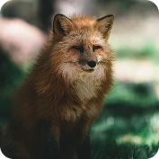
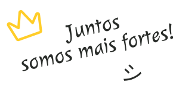
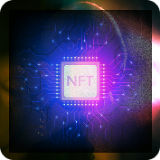

Tempero da Vila
Parceiro há 3 anos, a rede financia a capacitação de merendeiras e doceiras locais, além de oferecer mentorias de precificação e gestão de alimentos para os microempreendedores da comunidade.
Parceiro há 3 anos, a rede financia a capacitação de merendeiras e doceiras locais, além de oferecer mentorias de precificação e gestão de alimentos para os microempreendedores da comunidade.

Nossa parceria pioneira há 5 anos. O apoio contínuo da PetPampa viabiliza insumos e maquinários para pet shops de bairro e lojas de ração locais, transformando o cuidado animal em geração de renda.
“CADA PEQUENO CENTAVO TEM O PODER DE TRANSFORMAR VIDAS. MANTER O SITE VIVO SIGNIFICA MANTER MILHÕES DE FAMÍLIAS DA PERIFERIA GERANDO RENDA PRÓPRIA.”

Junto com a gente há 2 anos, o Ápice Bank impulsionou 3.100 empreendedores através de crédito acessível e oficinas financeiras práticas, permitindo que ideias da periferia ganhassem escala e sustentabilidade.
Parceiro recente focado em inclusão digital. A Nexo Hub fornece bolsas de conectividade e licenças de softwares de gestão, inserindo os negócios da favela direto no mercado de e-commerce e tecnologia.

Grandes transformações começam com colaboração. Junte-se a nós para levar o empreendedorismo periférico e a sua empresa ainda mais longe!
Cadast re-se!